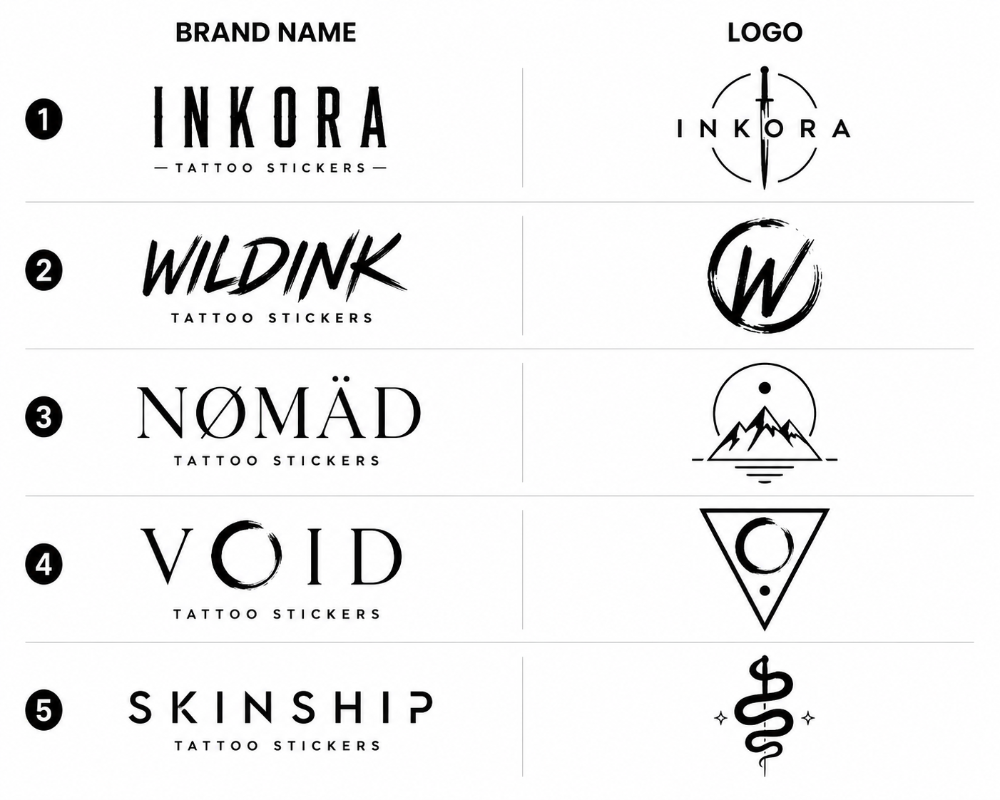
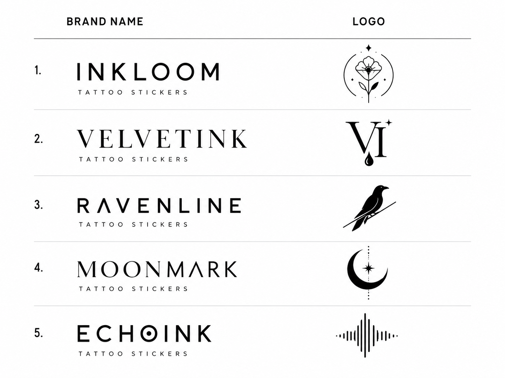
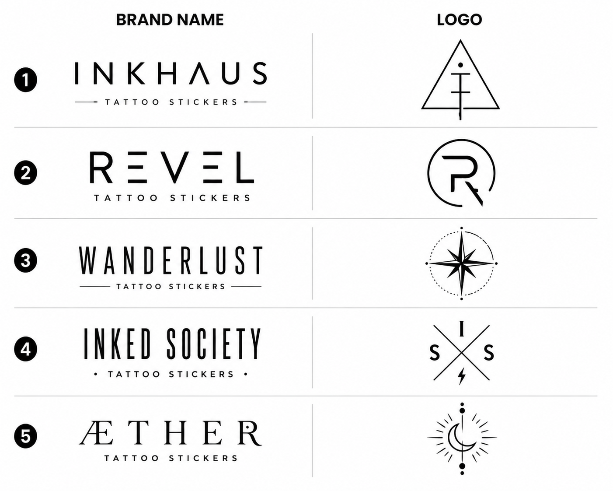
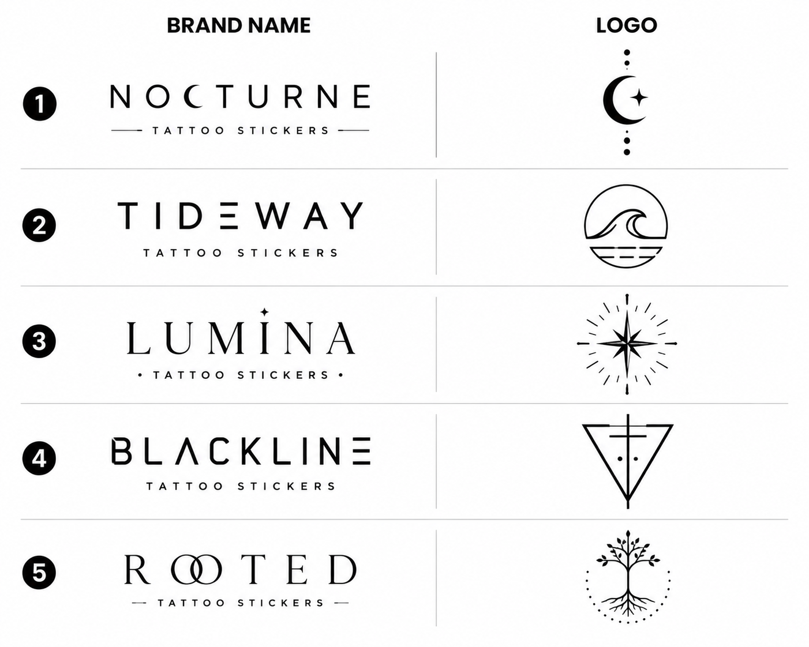

Quiet marks
Small compositions with room around the linework.
Fine-line temporary tattoos
Minimal designs for collarbones, wrists, ankles, and wherever your style goes next.
What It Is
INKORA is a concept brand for minimal, fine-line temporary tattoos. The visual system treats the body as a changing surface for small, non-permanent expressions.
Small compositions with room around the linework.
Thin visual language designed for close-range styling.
A look chosen for the moment rather than a fixed identity.
Ideas organized by collarbone, wrist, ankle, waistline, shoulder, and behind the ear.
Shop by Placement
Placement gives the collection a practical browsing logic without implying a complete product range.
A subtle line close to jewelry and fabric.
Small forms for everyday gestures.
Quiet shapes that follow movement.
Low-contrast marks for layered styling.
Open space for a slightly larger line.
Small placement for a brief reveal.
Collection Gallery
The gallery uses concept cards to show tone, not live products or complete sets.
Curved lines, small arcs, and lunar spacing for a calm visual rhythm.

Botanical marks with a loose trail, built for shoulder and ankle styling.

Graphic curves and delicate edges for wrists, waistlines, and layered looks.

Ornamental spacing for collarbones and behind-the-ear moments.

How It Looks
INKORA presents the mark as a styling choice: near jewelry, along fabric edges, or in a small reveal when the body moves.
How It Works
Explore placement ideas and styling approaches before choosing a design direction.
Start with a collection mood that fits the outfit or moment.
Think about visibility, scale, and how the line meets clothing or jewelry.
Pair a single mark with jewelry, fabric edges, or another small visual accent.
Starter Set
The starter idea is a concept recommendation: begin with a few visual moods and compare how each placement changes the feeling.
A simple place to read the line as adornment.
A small mark that appears in everyday movement.
A quiet placement that works with changing silhouettes.
Brand Story
The body changes with clothes, seasons, and mood. INKORA treats temporary choice as part of that movement, using minimal lines instead of loud statements.
FAQ
These answers describe the brand idea and page navigation only.
INKORA is a concept brand for fine-line temporary tattoos, organized around minimal marks and placement-led styling.
No. The brand idea centers on temporary marks chosen for a specific look or moment.
Use the placement section to compare collarbone, wrist, ankle, waistline, shoulder, and behind the ear styling ideas.
Yes. The page presents layering as a styling concept, especially with jewelry, fabric edges, and small visual accents.
Detailed product information will be presented with each confirmed collection.
Wholesale Inquiry
INKORA is positioned for boutiques, concept stores, gift shops, and lifestyle retailers that value considered visual objects. The next step would be to explore the brand language and consider a future retail conversation.